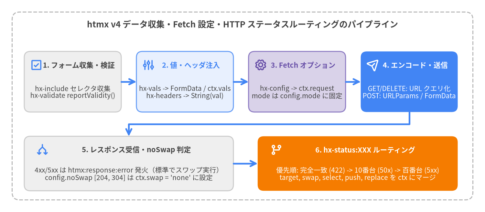

データ・検証・設定属性
htmx v4 は、リクエストパラメータの組み立て、カスタム HTTP ヘッダの注入、HTML5 フォーム制約検証の実行、fetch() リクエストオプションの調整、および HTTP ステータスコードに基づくレスポンスルーティングを宣言的に行う属性を提供します。htmx 2 とは異なり、htmx v4 は設定値を HCON（JSON の上位互換である htmx 設定オブジェクト記法）で解析し、js: 式を同期・非同期の両方で評価し、4xx/5xx レスポンスを hx-status:XXX で宣言的にルーティングします。
| 属性 | カテゴリ | 値の形式 | デフォルト / 継承 | 主な動作 |
|---|---|---|---|---|
hx-vals |
リクエストデータ | HCON / JSON / js:<expr> |
明示的継承（:inherited / :append） |
静的または動的なキー・値ペアをリクエストの FormData にマージし、ctx.vals にも公開します。 |
hx-headers |
リクエストヘッダ | HCON / JSON / js:<expr> |
明示的継承（:inherited / :append） |
ctx.request.headers にカスタム HTTP ヘッダを追加・上書きします（値は String(...) で文字列化）。 |
hx-include |
リクエストデータ | CSS / 拡張セレクタ | 明示的継承（:inherited / :append） |
追加の DOM 要素や外側の <form> コンテナから入力値を収集してリクエストに含めます。 |
hx-encoding |
エンコーディング | MIME タイプ文字列 | application/x-www-form-urlencoded |
非 GET/DELETE リクエストで multipart/form-data を指定すると、ファイル送信用の生 FormData を維持します。 |
hx-validate |
フォーム検証 | "true" | "false" |
<form>（novalidate なし）は "true"、他は "false"・非継承 |
htmx:config:request の前にフォーム・要素・hx-include 対象へ reportValidity() を実行します。 |
hx-config |
Fetch 設定 | HCON / JSON | 明示的継承（:inherited / :append） |
要素単位の HtmxRequestOptions（timeout, credentials, cache 等）を ctx.request にマージします（mode は固定）。 |
hx-status:XXX |
ステータス分岐 | HCON / JSON | 明示的継承（:inherited / :append） |
一致する HTTP ステータスコード（422, 50x, 4xx, 5xx）に応じて ctx のスワップ・ターゲット・履歴設定を上書きします。 |

Source Code
from drawlib.canvas import save, setup
from drawlib.icons import phosphor
from drawlib.lines import line, lines
from drawlib.shapes import rectangle
from drawlib.styles import Styles
from drawlib.text import text
setup(width=160, height=70, dpi=150)
# Outer container frame
rectangle((80, 35), width=152, height=62, style=Styles.MutedDashed.patch(shape_r=2.5))
text(
(80, 62.0),
"htmx v4 データ収集・Fetch 設定・HTTP ステータスルーティングのパイプライン",
style=Styles.DarkBold.patch(text_size=12.5),
)
# Top Row: 4 Outbound Stages (y = 43)
y_top = 43.0
card_w = 32.0
card_h = 20.0
x_1, x_2, x_3, x_4 = 24.0, 61.0, 98.0, 135.0
# Stage 1: Form & Validation
rectangle((x_1, y_top), width=card_w, height=card_h, style=Styles.Neutral.patch(shape_r=2.0))
phosphor.check_square((x_1 - 12.0, y_top + 5.5), width=4.2, style=Styles.PrimaryBold)
text((x_1 + 2.0, y_top + 5.5), "1. フォーム収集・検証", style=Styles.DarkBold.patch(text_size=10.5))
text(
(x_1, y_top - 3.5),
"hx-include セレクタ収集\nhx-validate reportValidity()",
style=Styles.Dark.patch(text_size=10.0),
)
line((x_1 + 16.0, y_top), (x_2 - 16.0, y_top), arrow_head="->", style=Styles.PrimaryBold)
# Stage 2: Dynamic Values & Headers
rectangle((x_2, y_top), width=card_w, height=card_h, style=Styles.PrimaryNeutral.patch(shape_r=2.0))
phosphor.sliders((x_2 - 12.0, y_top + 5.5), width=4.2, style=Styles.PrimaryBold)
text((x_2 + 2.0, y_top + 5.5), "2. 値・ヘッダ注入", style=Styles.PrimaryBold.patch(text_size=10.5))
text(
(x_2, y_top - 3.5),
"hx-vals -> FormData / ctx.vals\nhx-headers -> String(val)",
style=Styles.Dark.patch(text_size=10.0),
)
line((x_2 + 16.0, y_top), (x_3 - 16.0, y_top), arrow_head="->", style=Styles.PrimaryBold)
# Stage 3: Fetch Configuration
rectangle((x_3, y_top), width=card_w, height=card_h, style=Styles.SecondaryNeutral.patch(shape_r=2.0))
phosphor.gear((x_3 - 12.0, y_top + 5.5), width=4.2, style=Styles.SecondaryBold)
text((x_3 + 2.0, y_top + 5.5), "3. Fetch オプション", style=Styles.SecondaryBold.patch(text_size=10.5))
text(
(x_3, y_top - 3.5),
"hx-config -> ctx.request\nmode は config.mode に固定",
style=Styles.Dark.patch(text_size=10.0),
)
line((x_3 + 16.0, y_top), (x_4 - 16.0, y_top), arrow_head="->", style=Styles.PrimaryBold)
# Stage 4: Encoding & Dispatch (Focal Point 1)
rectangle((x_4, y_top), width=card_w, height=card_h, style=Styles.PrimaryFlat.patch(shape_r=2.0))
phosphor.paper_plane_tilt((x_4 - 12.0, y_top + 5.5), width=4.2, style=Styles.WhiteBold)
text((x_4 + 2.0, y_top + 5.5), "4. エンコード・送信", style=Styles.WhiteBold.patch(text_size=10.5))
text(
(x_4, y_top - 3.5),
"GET/DELETE: URL クエリ化\nPOST: URLParams / FormData",
style=Styles.White.patch(text_size=10.0),
)
# Bottom Row: Response & Status Routing (y = 16)
y_bot = 16.0
# Stage 5: HTTP Response Arrival
rectangle((42.5, y_bot), width=69.0, height=18.0, style=Styles.Neutral.patch(shape_r=2.0))
phosphor.arrows_split((14.0, y_bot + 4.5), width=4.2, style=Styles.PrimaryBold)
text((45.0, y_bot + 4.5), "5. レスポンス受信・noSwap 判定", style=Styles.DarkBold.patch(text_size=10.5))
text(
(42.5, y_bot - 3.5),
"4xx/5xx は htmx:response:error 発火（標準でスワップ実行）\nconfig.noSwap [204, 304] は ctx.swap = 'none' に設定",
style=Styles.Dark.patch(text_size=10.0),
)
# Stage 6: Status Code Routing (Focal Point 2)
rectangle((118.0, y_bot), width=66.0, height=18.0, style=Styles.AccentFlat.patch(shape_r=2.0))
phosphor.git_branch((91.0, y_bot + 4.5), width=4.2, style=Styles.WhiteBold)
text((120.5, y_bot + 4.5), "6. hx-status:XXX ルーティング", style=Styles.WhiteBold.patch(text_size=10.5))
text(
(118.0, y_bot - 3.5),
"優先順: 完全一致 (422) -> 10番台 (50x) -> 百番台 (5xx)\ntarget, swap, select, push, replace を ctx にマージ",
style=Styles.White.patch(text_size=10.0),
)
# Connectors between Top Row and Bottom Row
lines([(x_4, y_top - 10.0), (x_4, 29.0), (42.5, 29.0), (42.5, y_bot + 9.0)], arrow_head="->", style=Styles.PrimaryBold)
line((77.0, y_bot), (85.0, y_bot), arrow_head="->", style=Styles.PrimaryBold)
save()
リクエストペイロード・パラメータ属性#
hx-vals#
送信されるリクエストペイロードに静的または動的に計算されたキー・値ペアを追加します。htmx v4 では、hx-vals は HCON（簡潔な key:value 構文と厳密な JSON の両方を受理）で解析されるか、js: または javascript: プレフィックスが付いている場合は JavaScript として評価されます。
構文・シグネチャ
<!-- HCON 簡略構文 -->
<button hx-post="/items" hx-vals="category:books, priority:1, active:true">Create</button>
<!-- 標準 JSON 構文 -->
<button hx-post="/items" hx-vals='{"category": "books", "priority": 1}'>Create</button>
<!-- 動的な同期・非同期 JavaScript 評価 -->
<button hx-post="/items" hx-vals="js:{ token: await getAuthToken(), ts: Date.now() }">Create</button>
値の形式と内部評価メカニクス
| 形式・機能 | 構文例 | 内部メカニクス (src/htmx.js) |
|---|---|---|
| HCON オブジェクト | hx-vals="page:2, sort:'desc'" |
HCON.parse(hxAttr) により同期的に解析されます。数値や真偽値リテラル（2, true）は自動的に JSON 型変換されます。 |
| JSON オブジェクト | hx-vals='{"page": 2, "sort": "desc"}' |
{ で始まる文字列はそのまま JSON.parse(string) に委譲されます。 |
| 動的同期 JS | hx-vals="js:{ width: window.innerWidth }" |
js: / javascript: を除去し、必要に応じて {...} で囲み、this を要素に束縛・{ctx} をスコープに渡して AsyncFunction で実行します。 |
| 動的非同期 JS | hx-vals="js:{ sig: await signPayload(ctx) }" |
__executeJavaScript が AsyncFunction（isAsync = true）を使用するため、js: 内の await 式は htmx:config:request 発火前に解決されます。 |
| フォーム値の上書き | body.set(key, obj[key]) |
解決されたオブジェクトの各キーに対して FormData.prototype.set() を呼び出し、同名のフォーム入力や hx-include 値を上書きします。 |
| 拡張機能フック | ctx.vals = obj |
シリアライズ前の生オブジェクトを ctx.vals に保持し、JSON 拡張機能などが型付きの値を参照できるようにします。 |
| 継承 | hx-vals:inherited / hx-vals:append |
親要素からの継承には :inherited が必要です。子要素では hx-vals:append="extra:1" でキーを追加マージできます。 |
実践的な使用例
<!-- フォームの hidden 値を静的な HCON 値で上書き -->
<form hx-post="/orders">
<input type="hidden" name="source" value="default">
<!-- source="quick-buy" と express="true" を送信 -->
<button type="submit" hx-vals="source:'quick-buy', express:true">
Instant Checkout
</button>
</form>
<!-- htmx:config:request の直前に Web Crypto API で非同期署名を計算 -->
<button hx-post="/transfer"
hx-vals="js:{ nonce: crypto.randomUUID(), digest: await computeHmac(ctx.request.action) }">
Authorize Transfer
</button>
hx-headers#
リクエスト送信前に ctx.request.headers 上のカスタム HTTP ヘッダを追加または上書きします。hx-vals と同様に HCON、JSON、または js: / javascript: 動的式を受け付け、解決されたすべてのプロパティ値を String(obj[key]) で文字列に変換します。
構文・シグネチャ
<!-- 静的な HCON ヘッダ指定 -->
<button hx-get="/api/widgets" hx-headers="X-Client-Version: 4.0.1, X-Tenant: acme">
Load Widgets
</button>
<!-- body やルート要素での継承可能な CSRF ヘッダ指定 -->
<body hx-headers:inherited='{"X-CSRF-Token": "9f86d081884c7d659a2feaa0c55ad015"}'>
<button hx-delete="/account/session">Sign Out</button>
</body>
値の形式と内部評価メカニクス
| 形式・機能 | 構文例 | 内部メカニクス (src/htmx.js) |
|---|---|---|
| HCON / JSON | hx-headers="X-Mode:compact" |
__getAttributeObject(elt, "hx-headers", ...) で解析され、ctx.request.headers[key] = String(obj[key]) として設定されます。 |
動的 js: プレフィックス |
hx-headers="js:{ Authorization: 'Bearer ' + await getJwt() }" |
this をトリガー要素、スコープに ctx を渡して非同期評価し、htmx:config:request の前に Promise の解決を待機します。 |
| 標準ヘッダの上書き優先度 | Accept や HX-* の上書き |
__createCoreHeaders() の後に実行されるため、htmx:config:request の前に Accept: text/html などを上書き可能です。 |
| 明示的な継承 | hx-headers:inherited="..." |
<body> や <main> に hx-headers:inherited を配置することで、配下のすべての htmx リクエストに CSRF トークンやテナント ID を伝播できます。子要素の :append と併用可能です。 |
実践的な使用例
<!-- 明示的継承によるグローバル CSRF トークン設定と子要素でのヘッダ追加 -->
<main hx-headers:inherited="X-CSRF-Token: 'tok_live_88a9c'">
<button hx-post="/posts/publish"
hx-headers:append="X-Idempotency-Key: 'pub_2026_01'">
Publish Article
</button>
</main>
<!-- リクエストごとの動的トレース ID 付与 -->
<div hx-get="/metrics/realtime"
hx-trigger="every 10s"
hx-headers="js:{ 'X-Trace-Id': crypto.randomUUID() }">
</div>
hx-include#
送信リクエストのデータ収集フェーズ（__collectFormData）において、追加の入力要素やフォームコンテナを収集対象に含めます。htmx v4 では、外側の <form> を自動的に含めるのは非 GET/DELETE リクエスト（POST, PUT, PATCH, QUERY）のみです。<form> 要素自身以外から発火する GET や DELETE リクエストで周囲のフォーム入力を含めたい場合は、hx-include を明示的に指定する必要があります。
構文・シグネチャ
<!-- GET リクエストで外側のフォームを含める -->
<form id="filter-form">
<input type="text" name="q" placeholder="Filter...">
<select name="status" hx-get="/items" hx-include="closest form" hx-target="#list">
<option value="open">Open</option>
<option value="closed">Closed</option>
</select>
</form>
対応セレクタとデータ収集ルール
| セレクタ・ルール | 指定例 | __collectFormData / __addInputValues の動作 |
|---|---|---|
| 標準 CSS セレクタ | hx-include="#global-filters, .extra-input" |
ルートノード（document または ShadowRoot）内の該当要素を検索し、有効な [name]:not(button) 子孫要素の値を収集します。 |
closest <selector> |
hx-include="closest form" |
elt.closest(...) で DOM ツリーを遡り、最も近い祖先フォームやコンテナを含めます。 |
find <selector> / findAll <selector> |
hx-include="find input.active" |
トリガー要素を基準に最初の子孫（find）またはすべての子孫（findAll）を検索します。 |
next [<selector>] / previous [<selector>] |
hx-include="previous input" |
トリガー要素の前後にある兄弟・文書順の入力要素を含めます。 |
this |
hx-include="this" |
hx-include 属性を持つ要素自身の内部にある入力コントロールを含めます（__findThisElements により継承された this も解決）。 |
GET / DELETE のフォーム規則 |
usesQueryParams = /GET|DELETE/.test(method) |
GET / DELETE の場合、トリガー要素自身が <form>（elt.matches('form')）であるときのみフォーム全体を自動収集します。子要素（<button hx-get>, <input hx-get>）は hx-include="closest form" を指定しない限り自身の値のみを送信します。 |
重複排除（included Set） |
自動 Set 管理 |
収集済みの各入力要素は included Set に記録されるため、フォームと hx-include の範囲が重なっても値が重複送信されません。 |
実践的な使用例
<!-- 別テーブル内のチェック済み行を収集して一括 DELETE リクエストを送信 -->
<button hx-delete="/users/bulk"
hx-include="#users-table input[name='ids']:checked"
hx-confirm="Delete selected users?"
hx-target="#users-table">
Delete Selected
</button>
<table id="users-table">
<tr><td><input type="checkbox" name="ids" value="101"></td><td>Alice</td></tr>
<tr><td><input type="checkbox" name="ids" value="102"></td><td>Bob</td></tr>
</table>
hx-encoding#
非 GET/DELETE リクエストにおけるリクエストボディのエンコーディング形式を指定します。デフォルトでは、htmx は収集した FormData オブジェクトを application/x-www-form-urlencoded（new URLSearchParams(ctx.request.body)）に変換します。hx-encoding="multipart/form-data"（または外側の <form> に enctype="multipart/form-data"）を設定すると、生の FormData インスタンスが保持され、ブラウザの fetch() API が自動的にマルチパート境界（boundary）を付与してバイナリファイルをストリーム送信します。
構文・シグネチャ
<!-- ファイルをアップロードするフォームまたは単独ボタン -->
<form hx-post="/upload/avatar" hx-encoding="multipart/form-data" hx-target="#preview">
<input type="file" name="avatar" accept="image/png,image/jpeg" required>
<button type="submit">Upload Avatar</button>
</form>
エンコーディング値と動作仕様
| 設定値 | 外側の <form enctype> フォールバック |
fetch() に渡される最終的な ctx.request.body |
|---|---|---|
| (省略 / デフォルト) | form?.enctype にフォールバック |
new URLSearchParams(ctx.request.body) に変換されます（Content-Type: application/x-www-form-urlencoded;charset=UTF-8）。 |
"multipart/form-data" |
<form enctype="multipart/form-data"> と同等 |
ネイティブの FormData オブジェクトをそのまま維持します（ブラウザの fetch() が Content-Type: multipart/form-data; boundary=... を自動設定）。 |
(GET/DELETE 時は無視) |
N/A | GET と DELETE は常に ctx.request.body を url.searchParams に展開し、ctx.request.body = null に設定します。 |
実践的な使用例
<!-- <form> タグを使わずに hx-encoding と hx-include で複数ファイルをアップロード -->
<div class="uploader">
<input id="doc-file" type="file" name="documents" multiple>
<button hx-post="/documents/import"
hx-encoding="multipart/form-data"
hx-include="#doc-file"
hx-indicator="#upload-spinner">
Import Files
</button>
<span id="upload-spinner" class="htmx-indicator">Uploading...</span>
</div>
フォーム検証・Fetch設定・ステータスルーティング#
hx-validate#
htmx:config:request を発火してネットワークリクエストを送信する前に、収集対象の入力要素に対してネイティブ HTML5 制約検証（reportValidity()）を実行するかどうかを制御します。
構文・シグネチャ
<!-- フォーム外の単独 input または button で検証を強制 -->
<input type="email" name="email" required
hx-post="/newsletter/subscribe"
hx-validate="true"
hx-target="#sub-status">
検証ルールとデフォルト動作
| 要素のコンテキスト | デフォルトの hx-validate 値 |
検証対象と動作 (__collectFormData) |
|---|---|---|
novalidate のない <form> |
"true"（submitter に formnovalidate がある場合を除く） |
form.reportValidity() を呼び出します。false の場合、hx-vals 評価や htmx:config:request の前に即座に処理を中断します。 |
<form novalidate> |
"false" |
フォームに明示的に hx-validate="true" が指定されない限り、form.reportValidity() をスキップします。 |
<form> 以外の要素（<input>, <button>） |
"false" |
hx-validate="true" が設定されている場合、要素自身の elt.reportValidity()（フォーム外の場合）および hx-include で一致した全要素の node.reportValidity() を実行します。 |
| 継承 | 非継承（allowInheritance = false） |
this.__attributeValue(sourceElement, "hx-validate", ..., false) で参照されるため、トリガー要素に直接指定する必要があります。 |
実践的な使用例
<!-- <form> タグなしで単独ボタンと hx-include 対象フィールドの両方を HTML5 検証 -->
<div id="profile-fields">
<input type="text" name="username" minlength="3" required>
<input type="url" name="website" placeholder="https://example.com">
</div>
<button hx-put="/profile"
hx-include="#profile-fields"
hx-validate="true">
Save Profile
</button>
hx-config#
内部の fetch() リクエストオプション（HtmxRequestOptions 型の ctx.request）に対する要素単位のオーバーライドを提供します（htmx 2 の hx-request 属性の後継）。HCON または JSON を受け取り、リクエストコンテキスト生成時（__createRequestContext）に ctx.request へディープマージします。
構文・シグネチャ
<!-- HCON によるタイムアウト・クレデンシャル・キャッシュモードの指定 -->
<button hx-get="https://api.example.com/feed"
hx-config="timeout:5s, credentials:include, cache:'no-store'">
Sync External Feed
</button>
設定可能な HtmxRequestOptions キー
| キー | 型・指定可能な値 | デフォルト | 説明およびセキュリティ不変条件 |
|---|---|---|---|
timeout |
number | string (5000, "5s", "1m", 0) |
htmx.config.defaultTimeout (60000) |
htmx.parseInterval() で解析されるリクエスト単位のタイムアウト。超過時は 'timeout' を理由に ctx.request.signal を abort し、htmx:error を発火します。 |
credentials |
'same-origin' | 'include' | 'omit' |
'same-origin' |
同一オリジンまたはクロスオリジンリクエストで fetch() が Cookie や認証ヘッダを送信するかを制御します。 |
cache |
'default' | 'no-store' | 'reload' | 'no-cache' | 'force-cache' |
ブラウザ標準 | window.fetch(action, ctx.request) にそのまま渡されます。 |
sse.* / ws.* / <ext>.* |
ドット区切り HCON パス (sse.mode:once) |
拡張機能定義 | HCON のドット記法は ctx.request 上のネストされたオブジェクト（{sse: {mode: 'once'}}）に展開され、各拡張機能から参照されます。 |
mode（変更不可） |
'same-origin' | 'cors' | 'no-cors' |
htmx.config.mode ('same-origin') |
セキュリティ不変条件: HCON.merge(hxConfig, ctx.request) の直後に ctx.request.mode = this.config.mode で強制上書きされます。マークアップ注入による CORS 権限昇格を防ぐため、要素単位での mode 変更は常に無視されます。 |
実践的な使用例
<!-- ヘルスチェック用の3秒タイムアウト＋キャッシュ無効化ボタン -->
<button hx-get="/healthz"
hx-config="timeout:3s, cache:'no-store'"
hx-target="#health-badge">
Ping Server
</button>
<!-- 管理画面セクション全体へのリクエスト設定の明示的継承 -->
<section hx-config:inherited='{"timeout": "15s", "credentials": "include"}'>
<button hx-post="/admin/reindex">Trigger Search Reindex</button>
</section>
hx-status:XXX#
サーバーが特定の HTTP ステータスコードまたはワイルドカード範囲を返した際に、htmx のスワップ方式、ターゲット、セレクタ抽出、ブラウザ履歴更新を宣言的に再構成します。デフォルトで 4xx/5xx のボディを無視していた htmx 2 とは異なり、htmx v4 は htmx.config.noSwap（[204, 304]）を除くすべてのステータスコードをスワップ対象とし、htmx.swap(ctx) を呼び出す直前に hx-status:XXX のオーバーライドを適用します。
構文・シグネチャ
<form hx-post="/users"
hx-target="#user-list"
hx-swap="beforeend"
hx-status:422="target:#form-errors, swap:innerHTML, select:#error-summary"
hx-status:50x="target:#toast-container, swap:beforeend"
hx-status:5xx="swap:none">
<input type="email" name="email" required>
<div id="form-errors"></div>
<button type="submit">Create User</button>
</form>
パターン評価の優先順位と ctx オーバーライド項目
htmx は具体性の高い順（[str, str.slice(0, 2) + 'x', str[0] + 'xx']）にステータスパターンを評価し、htmx.config.noSwap または hx-status:<pattern> で最初に一致したパターンを適用して終了します。
| 優先順位・HCON キー | パターン・値の型 | __handleStatusCodes(ctx) における動作 |
|---|---|---|
1. 完全一致 (NNN) |
hx-status:422, hx-status:404, hx-status:201 |
3桁の HTTP ステータスコード文字列（例: "422"）に対して最初に照合されます。 |
2. 10番台ワイルドカード (NNx) |
hx-status:50x, hx-status:40x |
完全一致がない場合に2番目に照合されます（500〜509 や 400〜409 に一致）。 |
3. 百番台ワイルドカード (Nxx) |
hx-status:4xx, hx-status:5xx, hx-status:2xx |
3番目のフォールバックとして照合されます（任意の 400〜499 や 500〜599 に一致）。 |
swap |
スワップ指定文字列 (innerHTML, none, outerMorph) |
そのレスポンスに対する ctx.swap を上書きします（例: 5xx 時に swap:none でスワップを抑止）。 |
target |
CSS / 拡張セレクタ (#errors, closest .card) |
ctx.target を上書きします（__processMainSwap 内の __resolveTarget で要素解決）。 |
select |
CSS セレクタ (#error-list) |
ctx.select を上書きし、エラーレスポンス HTML から特定のフラグメントのみを抽出します。 |
selectOOB |
OOB セレクタ指定 (#flash:outerHTML) |
そのステータスコード時の Out-of-Band 抽出用 ctx.selectOOB を上書きします。 |
push / replace |
true | false | URL 文字列 ('/login') |
履歴更新時の ctx.push（hx-push-url）または ctx.replace（hx-replace-url）を上書きします。 |
transition |
true | false |
そのステータスのスワップで View Transitions API を有効化または無効化します。 |
実践的な使用例
<!-- アプリケーション全体のレイアウトで 401 と 5xx のステータスポリシーを継承 -->
<body hx-status:401:inherited="target:#auth-modal, swap:innerHTML, push:false"
hx-status:5xx:inherited="target:#global-alert, swap:innerHTML, push:false">
<div id="auth-modal"></div>
<div id="global-alert"></div>
<!-- 登録フォーム固有の 422 バリデーションエラールーティング -->
<form hx-post="/register"
hx-target="#main-view"
hx-push-url="/welcome"
hx-status:422="target:#field-errors, swap:innerMorph, push:false">
<input type="text" name="handle" required>
<div id="field-errors"></div>
<button type="submit">Register</button>
</form>
</body>